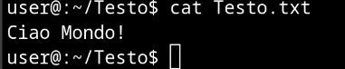

Linus Torvalds è un informatico e blogger finlandese, nato a
Helsinki nel 1969. Si è laureato in informatica all'Università
di Helsinki nel 1996.
Lo sviluppo di Linux è iniziato a seguito di una disputa tecnica
di Torvalds con il professor Andrew Tanenbaum. Tanenbaum aveva
realizzato per scopi didattici un sistema operativo simile a
Unix chiamato MINIX, che però non permetteva modifiche al codice
senza autorizzazione.
Questo spinse Torvalds a riflettere sulla possibilità di creare
un clone di MINIX ma con una licenza d'uso che consentisse la
libera modifica del codice. Fu questa scelta di adottare una
licenza di software libero che diede il via al progetto Linux,
coalizzando in pochi anni centinaia di programmatori che hanno
contribuito allo sviluppo del kernel.
Architettura e sviluppo
Linux è un kernel open source sviluppato nel 1991 come progetto
hobby, monolitico e altamente portabile. È scritto
principalmente in linguaggio C, con alcune parti in assembly. Il
suo codice sorgente è liberamente accessibile, personalizzabile
ed è diventato uno dei sistemi operativi più diffusi, utilizzato
anche in alcune console da gioco come lo Steam Deck.
Le distribuzioni Linux sono diverse versioni o "edizioni" di
Linux, ognuna con le proprie caratteristiche e funzionalità.
Ogni distribuzione ha punti di forza, come l'interfaccia
grafica, i programmi preinstallati, le opzioni di sicurezza e le
comunità di supporto.
Le principali famiglie di distribuzioni sono:
Debian: progettata per stabilità, con aggiornamenti ogni
quattro anni.
Ubuntu: basata su Debian, con una versione LTS ogni due anni
e una versione non-LTS ogni sei mesi.
Red Hat Enterprise Linux (RHEL): una distribuzione
commerciale sviluppata da Red Hat per ambienti aziendali e
server.
Fedora: sponsorizzata da Red Hat, è una distribuzione
orientata agli sviluppatori e utenti avanzati, nota per
includere le ultime tecnologie e aggiornamenti frequenti.
Arch Linux: una distribuzione minimalista e altamente
personalizzabile, progettata per utenti esperti. Utilizza un
modello di aggiornamento continuo, rendendolo sempre
aggiornato senza necessità di nuove versioni principali.
Prova Linux nel Browser
Puoi provare Linux direttamente nel tuo browser web grazie a
WebVM. Nota: WebVM funziona solo su versioni desktop recenti di
Chrome, Edge, Firefox e Safari. Visita WebVM
Crea un file di testo in un terminale di linux
Impariamo un paio di comandi necessari per la creazione di
cartelle e file di testo:
ls: Il comando ls mostra i contenuti nella cartella
corrente, ha la stessa funzione del comando dir su Windows;
mkdir: Il comando mkdir crea una cartella, bisogna
darle un nome. Il comando è uguale su Windows;
cd: Il comando cd serve per cambiare la cartella
selezionata, bisogna inserire il nome della cartella e il
percorso. Il comando è uguale su Windows;
cat: Il comando cat serve per mostare i contenuti di
un file.
Per incollare su un terminale linux bisogna fare Shift +
Ctrl + V, e non Ctrl + V.
Ora creiamo una cartella chiamata "Testo" con questo
comando.
Verifichiamo che la cartella sia stata creata.
dovresti vedere questo
Entriamo nella cartella "Testo".
Apriamo l'editor di testo "nano".
dovresti vedere questo
Scriviamo "Ciao Mondo!"
Premi Ctrl + O per salvare il file. Scrivi il nome del file come
"Testo.txt" e premi Enter.
Premi Ctrl + X per uscire da nano.
Verifichiamo che il file sia stato creato.
dovresti vedere questo
Stampiamo il contenuto del file.
dovresti vedere questo

Congratulazioni! hai imparato a creare e navigare cartelle,
modificare e creare file di testo!
Per tornare alla cartella iniziale puoi eseguire questo comando: